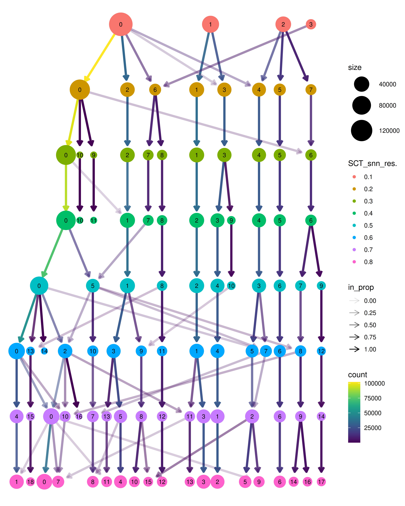

Last updated: 2026-10-16
Checks: 7 0
Knit directory: DCM_snRNAseq/
This reproducible R Markdown analysis was created with workflowr (version 1.7.2). The Checks tab describes the reproducibility checks that were applied when the results were created. The Past versions tab lists the development history.
Great! Since the R Markdown file has been committed to the Git repository, you know the exact version of the code that produced these results.
Great job! The global environment was empty. Objects defined in the global environment can affect the analysis in your R Markdown file in unknown ways. For reproduciblity it’s best to always run the code in an empty environment.
The command set.seed(20240606) was run prior to running
the code in the R Markdown file. Setting a seed ensures that any results
that rely on randomness, e.g. subsampling or permutations, are
reproducible.
Great job! Recording the operating system, R version, and package versions is critical for reproducibility.
Nice! There were no cached chunks for this analysis, so you can be confident that you successfully produced the results during this run.
Great job! Using relative paths to the files within your workflowr project makes it easier to run your code on other machines.
Great! You are using Git for version control. Tracking code development and connecting the code version to the results is critical for reproducibility.
The results in this page were generated with repository version 5433bea. See the Past versions tab to see a history of the changes made to the R Markdown and HTML files.
Note that you need to be careful to ensure that all relevant files for
the analysis have been committed to Git prior to generating the results
(you can use wflow_publish or
wflow_git_commit). workflowr only checks the R Markdown
file, but you know if there are other scripts or data files that it
depends on. Below is the status of the Git repository when the results
were generated:
Ignored files:
Ignored: .Rhistory
Ignored: .Rproj.user/
Ignored: output/CellChat/
Ignored: output/Cell_cell_communication_Macrophages/
Ignored: output/Chaffin_2022/
Ignored: output/Comparison_RV_bulk_RNAseq/
Ignored: output/Koenig_2022/
Ignored: output/Matrifibrocytes/
Ignored: output/Matrifibrocytes_disease_vs_HC_adj_subsets/
Ignored: output/SSc_PAH/
Untracked files:
Untracked: .Rprofile
Untracked: Chaffin_wilcox.csv
Untracked: GRCh38-2020-A_build/
Untracked: Koenig_wilcox.csv
Untracked: analysis/A_01_Cohort_proteomics_QC_20261013.Rmd
Untracked: analysis/A_02_mPAP_programmes_HC_20261013.Rmd
Untracked: analysis/A_03_Olink_DCM_HC_clinical_20261013.Rmd
Untracked: analysis/A_04_MS_DCM_HC_clinical_20261013.Rmd
Untracked: analysis/A_05_Protein_pathways_20261013.Rmd
Untracked: analysis/A_06_External_RV_comparison_20261013.Rmd
Untracked: analysis/A_07_Protein_robustness_RNA_pairs_20261013.Rmd
Untracked: analysis/A_08_Mechanism_robustness_20261013.Rmd
Untracked: analysis/A_09_Pressure_mechanisms_20261013.Rmd
Untracked: analysis/A_10_Olink_assay_audit_20261013.Rmd
Untracked: analysis/A_11_External_candidate_evidence_20261013.Rmd
Untracked: analysis/A_12_Slice_mechanism_context_20261013.Rmd
Untracked: analysis/A_13_Interim_results_summary_20261013.Rmd
Untracked: analysis/A_14_Pressure_gene_drivers_20261013.Rmd
Untracked: analysis/A_15_Cell_state_mechanisms_20261013.Rmd
Untracked: analysis/A_16_Regulatory_and_signalling_context_20261013.Rmd
Untracked: analysis/A_17_Mechanism_expression_atlas_20261013.Rmd
Untracked: analysis/A_18_Clinical_pressure_components_20261013.Rmd
Untracked: analysis/A_19_Protein_turnover_evidence_20261013.Rmd
Untracked: analysis/A_20_Detailed_RV_results_20261013.Rmd
Untracked: analysis/A_21_Functional_candidate_audit_20261014.Rmd
Untracked: analysis/A_22_Experimental_proposals_20261014.Rmd
Untracked: analysis/A_23_External_cohort_intake_20261014.Rmd
Untracked: analysis/A_24_External_nuclei_pseudobulk_20261014.Rmd
Untracked: analysis/A_25_External_bulk_pressure_function_20261014.Rmd
Untracked: analysis/A_26_External_mPAP_signature_validation_20261014.Rmd
Untracked: analysis/A_27_Strict_pressure_disease_candidates_20261014.Rmd
Untracked: analysis/A_28_External_nucleus_gene_models_20261014.Rmd
Untracked: analysis/A_29_Candidate_external_validation_20261014.Rmd
Untracked: analysis/A_30_External_pressure_model_sensitivity_20261014.Rmd
Untracked: analysis/A_31_Pressure_adaptation_evidence_20261014.Rmd
Untracked: analysis/A_32_External_deposited_model_audit_20261014.Rmd
Untracked: analysis/A_33_Male_external_DCM_validation_20261014.Rmd
Untracked: analysis/A_34_Candidate_protein_evidence_20261014.Rmd
Untracked: analysis/A_35_Direct_all_nucleus_bulk_mPAP_logFC_20261014.Rmd
Untracked: analysis/A_36_Disease_pressure_volcano_plots_20261014.Rmd
Untracked: analysis/A_37_mPAP_above35_comparison_20261014.Rmd
Untracked: analysis/A_38_External_RAP_age_differential_expression_20261014.Rmd
Untracked: analysis/A_39_Manuscript_Fig3E_TGFbeta_validation_20261014.Rmd
Untracked: analysis/A_40_Chaffin_intake_20261015.Rmd
Untracked: analysis/A_40_Koenig_intake_20261015.Rmd
Untracked: analysis/A_40_Our_intake_20261015.Rmd
Untracked: analysis/A_40_Reichart_intake_20261015.Rmd
Untracked: analysis/A_41_Resources_20261015.Rmd
Untracked: analysis/A_42_Chaffin_LV_DCM_HC_20261015.Rmd
Untracked: analysis/A_42_Koenig_LV_DCM_HC_20261015.Rmd
Untracked: analysis/A_42_Kuznetsov_RV_DCM_HC_20261015.Rmd
Untracked: analysis/A_42_Kuznetsov_bulk_RV_DCM_HC_20261015.Rmd
Untracked: analysis/A_42_Our_RV_DCM_HC_20261015.Rmd
Untracked: analysis/A_42_Reichart_LV_DCM_HC_20261015.Rmd
Untracked: analysis/A_42_Reichart_RV_DCM_HC_20261015.Rmd
Untracked: analysis/A_43_Paired_Reichart_chamber_tests_20261015.Rmd
Untracked: analysis/A_44_Combined_pseudobulk_models_20261015.Rmd
Untracked: analysis/A_45_Independent_cohort_meta_analysis_20261015.Rmd
Untracked: analysis/A_46_Protein_RNA_pathway_agreement_20261015.Rmd
Untracked: analysis/A_47_RV_LV_summary_20261015.Rmd
Untracked: analysis/A_48_Our_RV_age_sensitivity_20261015.Rmd
Untracked: analysis/A_49_Analysis_checks_20261015.Rmd
Untracked: analysis/A_50_TF_target_protein_agreement_20261015.Rmd
Untracked: analysis/A_Cardiomyocytes_subclustering_20261012.Rmd
Untracked: analysis/A_Cell_cycle_DCM_vs_HC_20261012.Rmd
Untracked: analysis/A_Combined_cell_states_20261012.Rmd
Untracked: analysis/A_DA_DE_cell_state_DCM_vs_HC_20261012.Rmd
Untracked: analysis/A_DA_DE_cell_type_DCM_vs_HC_20261012.Rmd
Untracked: analysis/A_DCM_intake_20261008.Rmd
Untracked: analysis/A_DCM_protocol_20261008.md
Untracked: analysis/A_DCM_results_20261009.md
Untracked: analysis/A_Endothelial_cells_subclustering_20261012.Rmd
Untracked: analysis/A_Fibroblasts_subclustering_20261012.Rmd
Untracked: analysis/A_GSEA_cell_state_DCM_vs_HC_20261012.Rmd
Untracked: analysis/A_GSEA_cell_type_DCM_vs_HC_20261012.Rmd
Untracked: analysis/A_Lymphocytes_subclustering_20261012.Rmd
Untracked: analysis/A_Macrophages_subclustering_20261012.Rmd
Untracked: analysis/A_MultiNicheNet_cell_state_DCM_vs_HC_20261012.Rmd
Untracked: analysis/A_MultiNicheNet_cell_type_DCM_vs_HC_20261012.Rmd
Untracked: analysis/A_Mural_cells_subclustering_20261012.Rmd
Untracked: analysis/A_Overview_DCM_vs_HC_20261012.Rmd
Untracked: analysis/A_QC_integration_annotation_HC_DCM_20261012.Rmd
Untracked: analysis/A_Reference_resources_20261012.Rmd
Untracked: analysis/A_Selected_paper_markers_DCM_vs_HC_20261012.Rmd
Untracked: analysis/A_TF_Pathway_Cardiomyocytes_20261012.Rmd
Untracked: analysis/A_TF_Pathway_Endothelial_cells_20261012.Rmd
Untracked: analysis/A_TF_Pathway_Fibroblasts_20261012.Rmd
Untracked: analysis/A_TF_Pathway_Lymphocytes_20261012.Rmd
Untracked: analysis/A_TF_Pathway_Macrophages_20261012.Rmd
Untracked: analysis/A_TF_Pathway_Mural_cells_20261012.Rmd
Untracked: analysis/A_TF_Pathway_Other_20261012.Rmd
Untracked: analysis/Amrute_2024_fibroblast_integration.Rmd
Untracked: analysis/Amrute_2024_fibroblast_pseudobulk.Rmd
Untracked: analysis/Chaffin_2022.Rmd
Untracked: analysis/Check_IMC_panel.Rmd
Untracked: analysis/Comparison_RV_bulk_RNAseq.Rmd
Untracked: analysis/DE_Group_all_cell_types.Rmd
Untracked: analysis/EC_capillary_angiogenic_boxplot_stats.csv
Untracked: analysis/Endothelial_cells_SGLT2_I.Rmd
Untracked: analysis/Endothelial_integration_QC_figures.Rmd
Untracked: analysis/Fibroblasts_DA_DE_26.Rmd
Untracked: analysis/Genes_Luxembourg.Rmd
Untracked: analysis/HC_DEGs_clustering.Rmd
Untracked: analysis/Koenig_2022.Rmd
Untracked: analysis/Mass_Spec_RV_dysf.Rmd
Untracked: analysis/Mass_Spec_proteomics.Rmd
Untracked: analysis/Mass_Spec_proteomics_2.Rmd
Untracked: analysis/Mass_Spec_proteomics_3.Rmd
Untracked: analysis/Matrifibrocytes.Rmd
Untracked: analysis/Matrifibrocytes_2.Rmd
Untracked: analysis/Matrifibrocytes_3.Rmd
Untracked: analysis/Matrifibrocytes_disease_vs_HC.Rmd
Untracked: analysis/Matrifibrocytes_disease_vs_HC_adj.Rmd
Untracked: analysis/Matrifibrocytes_disease_vs_HC_adj_subsets.Rmd
Untracked: analysis/Matrifibrocytes_high_score_populations_disease_vs_HC_adj.Rmd
Untracked: analysis/Olink_RV_dysf.Rmd
Untracked: analysis/Olink_SSc_PAH.Rmd
Untracked: analysis/Olink_SSc_PAH_draft.Rmd
Untracked: analysis/Olink_proteomics_2.Rmd
Untracked: analysis/Proteomics_OLINK_MS.Rmd
Untracked: analysis/Proteomics_combined.Rmd
Untracked: analysis/Proteomics_combined_2.Rmd
Untracked: analysis/Pseudobulk_all.csv
Untracked: analysis/Pseudobulk_all_2.csv
Untracked: analysis/Pseudobulk_byCellType_facetGrid.pdf
Untracked: analysis/Pseudobulk_byCellType_filtered_wrap3col.pdf
Untracked: analysis/Pseudobulk_byCellType_filtered_wrap3col_proportional.pdf
Untracked: analysis/Pseudobulk_byCellType_wilcox.csv
Untracked: analysis/Pseudobulk_byCellType_wilcox.filtered.csv
Untracked: analysis/Pseudobulk_byCellType_wilcox_2.csv
Untracked: analysis/QC_integration_annotation_HC.Rmd
Untracked: analysis/Reichart_ncRNA.Rmd
Untracked: analysis/Reichart_wilcox.csv
Untracked: analysis/Selection_genes_histology.Rmd
Untracked: analysis/TAPSE_sPAP_concordance_3datasets.Rmd
Untracked: analysis/TF_activity_program_score_correlations_by_sample.csv
Untracked: analysis/TF_activity_program_scores_by_sample_cell_state.csv
Untracked: analysis/TOM/
Untracked: analysis/UntitledR.R
Untracked: analysis/ec_Reichart_logCPM.csv
Untracked: analysis/mPAP_concordance_3datasets.Rmd
Untracked: analysis/omnipathr-log/
Untracked: analysis/prot_test.Rmd
Untracked: analysis/test_1.Rmd
Untracked: analysis/test_fb_prot.Rmd
Untracked: code/A_Chambers_20261015/
Untracked: code/A_DCM_reanalysis_20261008/
Untracked: code/A_External_RV_20261014/
Untracked: code/A_HC_DCM_20261012/
Untracked: code/A_HC_QC_20261012/
Untracked: code/A_Novelty_20261013/
Untracked: code/Add_metadata.R
Untracked: code/Check DYSF.R
Untracked: code/Clustering_genes.R
Untracked: code/DE_5_percent.Rmd
Untracked: code/DE_5_percent.html
Untracked: code/DE_5_percent/
Untracked: code/DE_CM_test1.R
Untracked: code/DE_no_401.Rmd
Untracked: code/DE_no_401.html
Untracked: code/DE_no_401/
Untracked: code/Differential abundance test1.R
Untracked: code/Differential_Expression_edgeR_All.Rmd
Untracked: code/Differential_Expression_edgeR_All_2.Rmd
Untracked: code/Differential_Expression_edgeR_All_2.html
Untracked: code/Differential_Expression_edgeR_All_Age.Rmd
Untracked: code/Differential_Expression_edgeR_All_Age_2.Rmd
Untracked: code/Differential_Expression_edgeR_All_Age_2.html
Untracked: code/Differential_Expression_edgeR_All_groups.Rmd
Untracked: code/Differential_Expression_edgeR_All_groups.html
Untracked: code/Differential_Expression_edgeR_All_groups_2.Rmd
Untracked: code/Differential_Expression_edgeR_All_groups_2.html
Untracked: code/Differential_Expression_edgeR_All_groups_3.Rmd
Untracked: code/Differential_Expression_edgeR_All_groups_3.html
Untracked: code/Endothelial_cells_cubclustering_removed.Rmd
Untracked: code/PCA and CCA analysis test.R
Untracked: code/Pseudobulk DCM HC.R
Untracked: code/Published_heart_datasets_RV_vs_LV.Rmd
Untracked: code/QC_integration_annotation_orig.Rmd
Untracked: code/Removed_chunks.Rmd
Untracked: code/UpSet_plot_DEGs.Rmd
Untracked: code/Volcano_highlighted_genes.R
Untracked: code/ezInteractiveTable.Rmd
Untracked: code/ezInteractiveTable.html
Untracked: code/old.R
Untracked: data/Baza_dla_Gino_AP.xlsx
Untracked: data/Baza_dla_Gino_AP_2.xlsx
Untracked: data/Baza_dla_Gino_AP_short.xlsx
Untracked: data/Cellbender_output/
Untracked: data/Cellranger_output/
Untracked: data/DCM_Clinical_data_22.xlsx
Untracked: data/DCM_Clinical_data_26.xlsx
Untracked: data/DCM_Clinical_data_30.xlsx
Untracked: data/DCM_Clinical_data_30_261012.xlsx
Untracked: data/DCM_Clinical_data_83.xlsx
Untracked: data/HMEC_RNAseq/
Untracked: data/Heart_datasets/
Untracked: data/Heart_specific_proteome.xlsx
Untracked: data/Homo_sapiens.GRCh38.93.gtf
Untracked: data/Human_plasma_proteome.xlsx
Untracked: data/Mass_spec/
Untracked: data/Massons_quantification.xlsx
Untracked: data/OLINK/
Untracked: data/OLINK_LVAD/
Untracked: data/Published_datasets/
Untracked: data/Raw/
Untracked: data/SSc-PAH/
Untracked: data/gencode.v46.chr_patch_hapl_scaff.annotation.gtf
Untracked: data/gencode.v46.chr_patch_hapl_scaff.basic.annotation.gtf
Untracked: data/refdata-gex-GRCh38-2020-A/
Untracked: omnipathr-log/
Untracked: output/A_Chambers_20261015/
Untracked: output/A_DCM_reanalysis_20261008/
Untracked: output/A_External_RV_20261014/
Untracked: output/A_HC_DCM_20261012/
Untracked: output/A_HC_QC_20261012/
Untracked: output/A_Novelty_20261013/
Untracked: output/A_mPAP_GSEA_20261009/
Untracked: output/A_mPAP_PCA_20261009/
Untracked: output/A_mPAP_age_20261009/
Untracked: output/A_mPAP_leave_batch_20261009/
Untracked: output/Add_cell_states_remove_contamination/
Untracked: output/Amrute_2024_fibroblast_integration/
Untracked: output/Amrute_2024_fibroblast_pseudobulk/
Untracked: output/Amrute_2024_matrifibrocyte_markers/
Untracked: output/Biomarkers_selection/
Untracked: output/CM_lncRNAs/
Untracked: output/CM_lncRNAs_2/
Untracked: output/Cardiomyocytes_DA_DE/
Untracked: output/Cardiomyocytes_subclustering/
Untracked: output/Cardiomyocytes_subclustering_26/
Untracked: output/Cell_cell_communication/
Untracked: output/Cell_cell_communication_LV/
Untracked: output/Cell_cell_communication_LV2/
Untracked: output/Cell_cycle/
Untracked: output/Check_IMC_panel/
Untracked: output/Comparison_LV/
Untracked: output/DA_DE_all_cell_types_and_parameters/
Untracked: output/DE_Fibrosis_all_cell_types/
Untracked: output/DE_Fibrosis_fibroblasts/
Untracked: output/DE_Group_all_cell_types/
Untracked: output/DE_all_cell_types_mPAP/
Untracked: output/DE_mPAP_all_cell_types/
Untracked: output/Differential_expression_edgeR_All/
Untracked: output/Differential_expression_edgeR_All_Age/
Untracked: output/Dysferlin/
Untracked: output/Endothelial_cells_Koenig_Reichart/
Untracked: output/Endothelial_cells_Koenig_Reichart_manuscript/
Untracked: output/Endothelial_cells_SGLT2_I/
Untracked: output/Endothelial_cells_published_datasets/
Untracked: output/Endothelial_cells_subclustering/
Untracked: output/Fibroblasts_DA_DE_26/
Untracked: output/Fibroblasts_subclustering/
Untracked: output/Figures_manuscript/
Untracked: output/Genes_Luxembourg/
Untracked: output/Genes_Luxembourg_2/
Untracked: output/HC_DEGs_clustering/
Untracked: output/HMEC/
Untracked: output/HMEC_second_run/
Untracked: output/HMEC_second_run_manuscript/
Untracked: output/LVAD_OLINK/
Untracked: output/LV_Klaudia/
Untracked: output/LV_datasets_DCM_vs_HC/
Untracked: output/Lymphocytes_subclustering/
Untracked: output/MOFA_integrative_analysis/
Untracked: output/MOFA_integrative_analysis_v2/
Untracked: output/MOFA_integrative_analysis_v3/
Untracked: output/MOFA_integrative_analysis_v4/
Untracked: output/MOFA_integrative_analysis_v6/
Untracked: output/MS_proteomics/
Untracked: output/Macrophages_subclustering/
Untracked: output/Mass_Spec_RV_dysf/
Untracked: output/Mass_Spec_proteomics/
Untracked: output/Mass_Spec_proteomics_2/
Untracked: output/Mass_Spec_proteomics_3/
Untracked: output/Matrifibrocytes_1/
Untracked: output/Matrifibrocytes_2/
Untracked: output/Matrifibrocytes_2_adjusted/
Untracked: output/Matrifibrocytes_disease_vs_HC/
Untracked: output/Matrifibrocytes_disease_vs_HC_adj/
Untracked: output/Matrifibrocytes_high_score_populations_disease_vs_HC_adj/
Untracked: output/Matrifibrocytes_integration/
Untracked: output/Matrifibrocytes_subclusters_disease_vs_HC_adj/
Untracked: output/Mural_cells_subclustering/
Untracked: output/Olink_RV_dysf/
Untracked: output/Olink_SSc_PAH/
Untracked: output/Olink_SSc_PAH_draft/
Untracked: output/Olink_proteomics/
Untracked: output/Olink_proteomics_2/
Untracked: output/Proteomics_FB_state_PCA/
Untracked: output/Proteomics_PCA_cell_state_composition/
Untracked: output/Proteomics_combined/
Untracked: output/Proteomics_combined_2/
Untracked: output/Proteomics_combined_3/
Untracked: output/Proteomics_combined_4/
Untracked: output/Proteomics_combined_final/
Untracked: output/Proteomics_combined_final_males_only/
Untracked: output/Proteomics_combined_final_males_only_no_PK259/
Untracked: output/Proteomics_combined_final_males_only_no_batch2/
Untracked: output/Proteomics_differential_abundance/
Untracked: output/Proteomics_differential_abundance_v2/
Untracked: output/Proteomics_differential_abundance_v3/
Untracked: output/Proteomics_differential_abundance_v4/
Untracked: output/Proteomics_differential_abundance_v6/
Untracked: output/Proteomics_matched_PCA_multicell_states_v2/
Untracked: output/Proteomics_quality_control/
Untracked: output/Proteomics_quality_control_v2/
Untracked: output/Proteomics_quality_control_v3/
Untracked: output/Proteomics_quality_control_v4/
Untracked: output/Proteomics_quality_control_v6/
Untracked: output/QC_integration_annotation/
Untracked: output/QC_integration_annotation_HC/
Untracked: output/Reichart2022_ventricle_specificity_noncoding/
Untracked: output/Reichart_DE_DCMvsHC/
Untracked: output/Selection_genes_histology/
Untracked: output/TAPSE_sPAP_concordance_3datasets/
Untracked: output/TAPSE_sPAP_proteomics_snrna/
Untracked: output/UntitledR.R
Untracked: output/Variance_partitioning/
Untracked: output/mPAP_concordance_3datasets/
Untracked: redsfewfref.R
Untracked: reference_sources/
Untracked: renv.lock
Untracked: renv/
Untracked: wflow_publish.log
Unstaged changes:
Modified: analysis/Amrute_2024_matrifibrocyte_markers.Rmd
Modified: analysis/CM_lncRNAs.Rmd
Modified: analysis/Cardiomyocytes_DA_DE.Rmd
Modified: analysis/Cell_cycle.Rmd
Modified: analysis/Comparison_LV.Rmd
Modified: analysis/DE_Fibrosis_all_cell_types.Rmd
Deleted: analysis/Differential_Expression_edgeR_All.Rmd
Deleted: analysis/Differential_Expression_edgeR_All_Age.Rmd
Modified: analysis/Endothelial_cells_Koenig_Reichart_manuscript.Rmd
Modified: analysis/Endothelial_cells_published_datasets.rmd
Modified: analysis/Figures_manuscript.Rmd
Modified: analysis/HMEC.Rmd
Modified: analysis/HMEC_second_run_manuscript.Rmd
Modified: analysis/LV_Klaudia.Rmd
Modified: analysis/MOFA_integrative_analysis_v6.Rmd
Modified: analysis/Olink_proteomics.Rmd
Modified: analysis/Proteomics_PCA_cell_state_composition.Rmd
Modified: analysis/Proteomics_combined_final.Rmd
Modified: analysis/Reichart_DE_DCMvsHC.Rmd
Modified: analysis/SSc_PAH.Rmd
Modified: analysis/_site.yml
Note that any generated files, e.g. HTML, png, CSS, etc., are not included in this status report because it is ok for generated content to have uncommitted changes.
These are the previous versions of the repository in which changes were
made to the R Markdown
(analysis/Matrifibrocytes_integration.Rmd) and HTML
(docs/Matrifibrocytes_integration.html) files. If you’ve
configured a remote Git repository (see ?wflow_git_remote),
click on the hyperlinks in the table below to view the files as they
were in that past version.
| File | Version | Author | Date | Message |
|---|---|---|---|---|
| Rmd | 5433bea | GinoBonazza | 2026-10-16 | wflow_publish("analysis/Matrifibrocytes_integration.Rmd") |
Setup
current_file <- "Matrifibrocytes_integration"
library(here)
library(readxl)
library(Seurat)
library(DropletUtils)
library(Matrix)
library(scCustomize)
library(dplyr)
library(ggplot2)
library(tidyr)
library(stringr)
library(tibble)
library(patchwork)
library(edgeR)
library(limma)
library(EnhancedVolcano)
library(clusterProfiler)
library(org.Hs.eg.db)
library(enrichplot)
library(ComplexHeatmap)
library(circlize)
library(RColorBrewer)
library(ggpubr)
library(reactable)
library(scales)
library(cowplot)
library(speckle)
library(broom)
library(harmony)
library(clustree)
library(qs2)
library(decoupleR)
library(OmnipathR)
library(dorothea)
output_dir_data <- here::here("output", current_file)
if (!dir.exists(output_dir_data)) dir.create(output_dir_data, recursive = TRUE)
if (!dir.exists(here::here("docs", "figure"))) dir.create(here::here("docs", "figure"), recursive = TRUE)
output_dir_figs <- here::here("docs", "figure", paste0(current_file, ".Rmd"))
if (!dir.exists(output_dir_figs)) dir.create(output_dir_figs, recursive = TRUE)
fb_dir <- here::here("output", "Matrifibrocytes_1")
cell_type_cols <- c(
"#d05050", "#33A02C", "#1F78B4", "#CAB2D6", "#FF7F00", "#B2DF8A",
"#B15928", "#FFD000", "#FA95C0", "#FDBF6F", "#6A3D9A", "#7aCDF9", "#E6E600",
"#8DD3C7", "#FB8072", "#80B1D3", "#BC80BD", "#CCEBC5", "#FFED6F",
"#A6CEE3", "#F781BF"
)
group_cols <- c("HC" = "grey85", "DCM" = "#A63A2A", "NICM" = "#33A02C", "MI" = "#004C8C")
dataset_cols <- c(
"Koenig" = "#CAB2D6",
"Reichart" = "#B2DF8A",
"Chaffin" = "#FDBF6F",
"Amrute" = "#FA95C0",
"Kuppe" = "#7aCDF9"
)Load fibroblast datasets
koenig_fb <- qs_read(
file = here::here(fb_dir, "koenig_fb.qs2"),
nthreads = 32
)
reichart_fb <- qs_read(
file = here::here(fb_dir, "reichart_fb.qs2"),
nthreads = 32
)
chaffin_fb <- qs_read(
file = here::here(fb_dir, "chaffin_fb.qs2"),
nthreads = 32
)
amrute_fb <- qs_read(
file = here::here(fb_dir, "amrute_fb.qs2"),
nthreads = 32
)
kuppe_fb <- qs_read(
file = here::here(fb_dir, "kuppe_fb.qs2"),
nthreads = 32
)Prepare metadata
reichart_fb$nCount_RNA <- reichart_fb$nCounts_RNA
reichart_fb$nFeature_RNA <- reichart_fb$nFeaturess_RNA
koenig_fb$Group <- factor(koenig_fb$Group, levels = c("HC", "DCM", "NICM", "MI"))
reichart_fb$Group <- factor(reichart_fb$Group, levels = c("HC", "DCM", "NICM", "MI"))
chaffin_fb$Group <- factor(chaffin_fb$Group, levels = c("HC", "DCM", "NICM", "MI"))
amrute_fb$Group <- factor(amrute_fb$Group, levels = c("HC", "DCM", "NICM", "MI"))
kuppe_fb$Group <- factor(kuppe_fb$Group, levels = c("HC", "DCM", "NICM", "MI"))
koenig_fb$Dataset <- factor(koenig_fb$Dataset, levels = c("Koenig", "Reichart", "Chaffin", "Amrute", "Kuppe"))
reichart_fb$Dataset <- factor(reichart_fb$Dataset, levels = c("Koenig", "Reichart", "Chaffin", "Amrute", "Kuppe"))
chaffin_fb$Dataset <- factor(chaffin_fb$Dataset, levels = c("Koenig", "Reichart", "Chaffin", "Amrute", "Kuppe"))
amrute_fb$Dataset <- factor(amrute_fb$Dataset, levels = c("Koenig", "Reichart", "Chaffin", "Amrute", "Kuppe"))
kuppe_fb$Dataset <- factor(kuppe_fb$Dataset, levels = c("Koenig", "Reichart", "Chaffin", "Amrute", "Kuppe"))
koenig_fb$percent.mt <- PercentageFeatureSet(koenig_fb, pattern = "^MT-")
reichart_fb$percent.mt <- PercentageFeatureSet(reichart_fb, pattern = "^MT-")
chaffin_fb$percent.mt <- PercentageFeatureSet(chaffin_fb, pattern = "^MT-")
amrute_fb$percent.mt <- PercentageFeatureSet(amrute_fb, pattern = "^MT-")
kuppe_fb$percent.mt <- PercentageFeatureSet(kuppe_fb, pattern = "^MT-")
koenig_fb <- RenameCells(koenig_fb, add.cell.id = "Koenig")
reichart_fb <- RenameCells(reichart_fb, add.cell.id = "Reichart")
chaffin_fb <- RenameCells(chaffin_fb, add.cell.id = "Chaffin")
amrute_fb <- RenameCells(amrute_fb, add.cell.id = "Amrute")
kuppe_fb <- RenameCells(kuppe_fb, add.cell.id = "Kuppe")Merge fibroblast objects
common_genes_fb <- Reduce(
intersect,
list(
rownames(koenig_fb),
rownames(reichart_fb),
rownames(chaffin_fb),
rownames(amrute_fb),
rownames(kuppe_fb)
)
)
length(common_genes_fb)[1] 17797FB_combined <- merge(
x = koenig_fb[common_genes_fb, ],
y = list(
reichart_fb[common_genes_fb, ],
chaffin_fb[common_genes_fb, ],
amrute_fb[common_genes_fb, ],
kuppe_fb[common_genes_fb, ]
),
merge.data = FALSE
)
rm(koenig_fb, reichart_fb, chaffin_fb, amrute_fb, kuppe_fb)QC metadata combined fibroblasts
FB_combined$nCount_RNA <- Matrix::colSums(FB_combined@assays$RNA@counts)
FB_combined$nFeature_RNA <- Matrix::colSums(FB_combined@assays$RNA@counts > 0)
FB_combined@meta.data %>%
dplyr::count(Dataset, Group) Dataset Group n
1 Amrute HC 15700
2 Amrute NICM 11180
3 Chaffin DCM 51356
4 Chaffin HC 38219
5 Koenig DCM 20388
6 Koenig HC 28736
7 Kuppe HC 9452
8 Kuppe MI 37857
9 Reichart DCM 35353
10 Reichart HC 20300FB_combined@meta.data %>%
dplyr::count(Dataset, Sample, sort = TRUE) %>%
reactable::reactable()VlnPlot(
FB_combined,
features = c("nFeature_RNA", "nCount_RNA", "percent.mt"),
group.by = "Dataset",
pt.size = 0,
ncol = 3
)
SCTransform combined fibroblasts
DefaultAssay(FB_combined) <- "RNA"
FB_list <- SplitObject(FB_combined, split.by = "Sample")
for (i in seq_along(FB_list)) {
FB_list[[i]] <- SCTransform(
FB_list[[i]],
vst.flavor = "v2",
vars.to.regress = "percent.mt",
return.only.var.genes = TRUE,
variable.features.n = 3000,
min_cells = 0,
verbose = FALSE
)
}
features_fb <- SelectIntegrationFeatures(object.list = FB_list, nfeatures = 3000)
FB_combined <- merge(
x = FB_list[[1]],
y = FB_list[2:length(FB_list)],
merge.data = TRUE
)
VariableFeatures(FB_combined) <- features_fb
rm(FB_list)PCA
FB_combined <- RunPCA(FB_combined, npcs = 50, verbose = FALSE)
ElbowPlot(FB_combined, ndims = 50)
Harmony
FB_combined <- harmony::RunHarmony(
object = FB_combined,
assay.use = "SCT",
group.by.vars = c("Sample", "Dataset"),
dims.use = 1:50,
plot_convergence = TRUE,
.options = harmony::harmony_options(max.iter.cluster = 100)
)
resolutions_to_keep <- paste0("SCT_snn.res.", c("0.1", "0.2", "0.3", "0.4", "0.5", "0.6", "0.7", "0.8"))
sct_res_cols <- grep("^SCT_snn[\\._]res\\.", colnames(FB_combined@meta.data), value = TRUE)
cols_to_remove <- setdiff(sct_res_cols, resolutions_to_keep)
if (length(cols_to_remove) > 0) {
FB_combined@meta.data <- FB_combined@meta.data[, !colnames(FB_combined@meta.data) %in% cols_to_remove, drop = FALSE]
}
grep("^SCT_snn[\\._]res\\.", colnames(FB_combined@meta.data), value = TRUE)character(0)Clustering
DefaultAssay(FB_combined) <- "SCT"
FB_combined <- RunUMAP(
FB_combined,
reduction = "harmony",
dims = 1:15
)
FB_combined <- FindNeighbors(
FB_combined,
reduction = "harmony",
dims = 1:15
)
FB_combined <- FindClusters(
FB_combined,
resolution = seq(0.1, 0.8, by = 0.1)
)Modularity Optimizer version 1.3.0 by Ludo Waltman and Nees Jan van Eck
Number of nodes: 268541
Number of edges: 4908769
Running Louvain algorithm...
Maximum modularity in 10 random starts: 0.9244
Number of communities: 16
Elapsed time: 91 secondsModularity Optimizer version 1.3.0 by Ludo Waltman and Nees Jan van Eck
Number of nodes: 268541
Number of edges: 4908769
Running Louvain algorithm...
Maximum modularity in 10 random starts: 0.8989
Number of communities: 20
Elapsed time: 68 secondsModularity Optimizer version 1.3.0 by Ludo Waltman and Nees Jan van Eck
Number of nodes: 268541
Number of edges: 4908769
Running Louvain algorithm...
Maximum modularity in 10 random starts: 0.8820
Number of communities: 23
Elapsed time: 67 secondsModularity Optimizer version 1.3.0 by Ludo Waltman and Nees Jan van Eck
Number of nodes: 268541
Number of edges: 4908769
Running Louvain algorithm...
Maximum modularity in 10 random starts: 0.8662
Number of communities: 24
Elapsed time: 68 secondsModularity Optimizer version 1.3.0 by Ludo Waltman and Nees Jan van Eck
Number of nodes: 268541
Number of edges: 4908769
Running Louvain algorithm...
Maximum modularity in 10 random starts: 0.8518
Number of communities: 23
Elapsed time: 67 secondsModularity Optimizer version 1.3.0 by Ludo Waltman and Nees Jan van Eck
Number of nodes: 268541
Number of edges: 4908769
Running Louvain algorithm...
Maximum modularity in 10 random starts: 0.8401
Number of communities: 27
Elapsed time: 66 secondsModularity Optimizer version 1.3.0 by Ludo Waltman and Nees Jan van Eck
Number of nodes: 268541
Number of edges: 4908769
Running Louvain algorithm...
Maximum modularity in 10 random starts: 0.8312
Number of communities: 29
Elapsed time: 59 secondsModularity Optimizer version 1.3.0 by Ludo Waltman and Nees Jan van Eck
Number of nodes: 268541
Number of edges: 4908769
Running Louvain algorithm...
Maximum modularity in 10 random starts: 0.8222
Number of communities: 31
Elapsed time: 63 secondsIdents(FB_combined) <- "SCT_snn_res.0.2"clustree::clustree(FB_combined@meta.data[,grep("SCT_snn_res", colnames(FB_combined@meta.data))], prefix = "SCT_snn_res.")
UMAPs combined fibroblasts
p1 <- DimPlot(
FB_combined,
reduction = "umap",
group.by = "SCT_snn_res.0.2",
label = TRUE,
repel = TRUE,
shuffle = TRUE,
raster = FALSE,
pt.size = 0.1
) +
NoLegend() +
ggtitle("Combined fibroblast subclusters") +
theme(
axis.text = element_text(size = 8, face = "bold"),
axis.title = element_text(size = 12, face = "bold"),
plot.title = element_text(size = 14, face = "bold", hjust = 0.5)
)
p2 <- DimPlot(
FB_combined,
reduction = "umap",
group.by = "Dataset",
cols = dataset_cols,
shuffle = TRUE,
raster = FALSE,
pt.size = 0.1
) +
ggtitle("Dataset") +
theme(
axis.text = element_text(size = 8, face = "bold"),
axis.title = element_text(size = 12, face = "bold"),
plot.title = element_text(size = 14, face = "bold", hjust = 0.5)
)
p3 <- DimPlot(
FB_combined,
reduction = "umap",
group.by = "Group",
cols = group_cols,
shuffle = TRUE,
raster = FALSE,
pt.size = 0.1
) +
ggtitle("Group") +
theme(
axis.text = element_text(size = 8, face = "bold"),
axis.title = element_text(size = 12, face = "bold"),
plot.title = element_text(size = 14, face = "bold", hjust = 0.5)
)
p4 <- DimPlot(
FB_combined,
reduction = "umap",
split.by = "Dataset",
group.by = "SCT_snn_res.0.2",
label = FALSE,
shuffle = TRUE,
pt.size = 0.1,
raster = FALSE,
ncol = 3
) +
NoLegend() +
theme(
axis.text = element_text(size = 8, face = "bold"),
axis.title = element_text(size = 12, face = "bold"),
strip.text = element_text(size = 12, face = "bold")
)
(p1 + p2) / (p3 + p4)
Marker features on integrated fibroblasts
DefaultAssay(FB_combined) <- "SCT"
FeaturePlot(
FB_combined,
features = c("COMP", "CILP", "CHAD", "THBS4"),
reduction = "umap",
order = TRUE,
cols = c("grey90", "#A63A2A"),
pt.size = 0.5,
ncol = 4,
raster = FALSE
)
Matrifibrocyte score on integrated fibroblasts
matrifibrocyte_genes <- c("COMP", "CILP", "CHAD", "THBS4")
matrifibrocyte_genes_present <- matrifibrocyte_genes[matrifibrocyte_genes %in% rownames(FB_combined)]
FB_combined <- AddModuleScore(
object = FB_combined,
features = list(matrifibrocyte_genes_present),
name = "Matrifibrocyte_score",
assay = "SCT",
slot = "data",
ctrl = 25,
nbin = 24,
seed = 1
)
FB_combined$Matrifibrocyte_score <- FB_combined$Matrifibrocyte_score1
FB_combined$Matrifibrocyte_score1 <- NULLFeaturePlot(
FB_combined,
features = "Matrifibrocyte_score",
reduction = "umap",
order = TRUE,
cols = c("grey90", "#A63A2A"),
pt.size = 0.5,
raster = FALSE
) +
ggtitle("Matrifibrocyte score") +
theme(
axis.text = element_text(size = 8, face = "bold"),
axis.title = element_text(size = 12, face = "bold"),
plot.title = element_text(size = 16, face = "bold", hjust = 0.5)
)
VlnPlot_scCustom(
FB_combined,
features = c("nCount_RNA", "nFeature_RNA", "percent.mt", "TTN", "PECAM1"),
num_columns = 5,
pt.size = 0,
colors_use = cell_type_cols
) + theme(axis.title.x = element_blank())FB_combined$Disease_status <- ifelse(
FB_combined$Group == "HC",
"HC",
"Disease"
)
FB_combined$Disease_status <- factor(
FB_combined$Disease_status,
levels = c("HC", "Disease")
)
df_prop_ec <- FB_combined@meta.data %>%
dplyr::count(Dataset, Disease_status, Sample, cluster = SCT_snn_res.0.2) %>%
dplyr::group_by(Dataset, Disease_status, Sample) %>%
dplyr::mutate(freq = n / sum(n)) %>%
dplyr::ungroup()
p_prop_dataset <- ggplot(df_prop_ec, aes(x = cluster, y = freq, fill = Dataset)) +
geom_boxplot(outlier.shape = NA, alpha = 0.8) +
geom_jitter(width = 0.15, size = 1.2, alpha = 0.8) +
scale_fill_manual(values = dataset_cols) +
labs(x = "Cluster", y = "Fraction of fibroblasts") +
theme_classic() +
theme(
axis.text.x = element_text(angle = 45, hjust = 1, face = "bold"),
axis.text.y = element_text(face = "bold"),
axis.title = element_text(face = "bold"),
legend.title = element_blank()
)
p_prop_group <- ggplot(df_prop_ec, aes(x = cluster, y = freq, fill = Disease_status)) +
geom_boxplot(outlier.shape = NA, alpha = 0.8) +
geom_jitter(width = 0.15, size = 1.2, alpha = 0.8) +
scale_fill_manual(values = group_cols) +
labs(x = "Cluster", y = "Fraction of fibroblasts") +
theme_classic() +
theme(
axis.text.x = element_text(angle = 45, hjust = 1, face = "bold"),
axis.text.y = element_text(face = "bold"),
axis.title = element_text(face = "bold"),
legend.title = element_blank()
)
p_prop_dataset | p_prop_group
DefaultAssay(FB_combined) <- "RNA"
FB_combined <- NormalizeData(FB_combined)
Idents(FB_combined) <- "SCT_snn_res.0.2"
FB_markers_combined <- FindAllMarkers(
FB_combined,
assay = "RNA",
only.pos = TRUE,
min.pct = 0.1,
logfc.threshold = 0.25,
return.thresh = 0.05
)
FB_markers_combined <- FB_markers_combined %>%
dplyr::arrange(cluster, desc(avg_log2FC))
FB_markers_top10_combined <- FB_markers_combined %>%
dplyr::group_by(cluster) %>%
dplyr::slice_max(order_by = avg_log2FC, n = 10, with_ties = FALSE) %>%
dplyr::ungroup()
FB_markers_top3_combined <- FB_markers_combined %>%
dplyr::group_by(cluster) %>%
dplyr::slice_max(order_by = avg_log2FC, n = 3, with_ties = FALSE) %>%
dplyr::ungroup()
FB_markers_combined %>%
dplyr::group_by(cluster) %>%
dplyr::slice_head(n = 20) %>%
reactable::reactable()write.csv(
FB_markers_combined,
here::here(output_dir_data, "FB_markers_combined_all.csv"),
row.names = FALSE
)
write.csv(
FB_markers_top10_combined,
here::here(output_dir_data, "FB_markers_combined_top10.csv"),
row.names = FALSE
)
write.csv(
FB_markers_top3_combined,
here::here(output_dir_data, "FB_markers_combined_top3.csv"),
row.names = FALSE
)FB_combined@meta.data[FB_combined@meta.data$SCT_snn_res.0.2 %in% c("0"), "cell_state"] = "FB_1"
FB_combined@meta.data[FB_combined@meta.data$SCT_snn_res.0.2 %in% c("1"), "cell_state"] = "FB_2"
FB_combined@meta.data[FB_combined@meta.data$SCT_snn_res.0.2 %in% c("2"), "cell_state"] = "FB_matrifibrocyte"
FB_combined@meta.data[FB_combined@meta.data$SCT_snn_res.0.2 %in% c("3"), "cell_state"] = "FB_3"
FB_combined@meta.data[FB_combined@meta.data$SCT_snn_res.0.2 %in% c("4"), "cell_state"] = "FB_4"
FB_combined@meta.data[FB_combined@meta.data$SCT_snn_res.0.2 %in% c("5"), "cell_state"] = "FB_5"
FB_combined@meta.data[FB_combined@meta.data$SCT_snn_res.0.2 %in% c("6"), "cell_state"] = "FB_CM_contamination"
FB_combined@meta.data[FB_combined@meta.data$SCT_snn_res.0.2 %in% c("7"), "cell_state"] = "FB_6"
FB_combined$cell_state <- factor(FB_combined$cell_state, levels = c("FB_1", "FB_2", "FB_matrifibrocyte", "FB_3", "FB_4", "FB_5", "FB_CM_contamination", "FB_6"))
Idents(FB_combined) <- FB_combined$cell_stateFB_combined <- subset(FB_combined, cell_state %in% c("FB_1", "FB_2", "FB_matrifibrocyte", "FB_3", "FB_4", "FB_5", "FB_6"))
FB_combined$cell_state <- factor(FB_combined$cell_state, levels = c("FB_1", "FB_2", "FB_matrifibrocyte", "FB_3", "FB_4", "FB_5", "FB_6"))
Idents(FB_combined) <- FB_combined$cell_stateDefaultAssay(FB_combined) <- "RNA"
qs_save(
FB_combined,
file = here::here(output_dir_data, "FB_combined.qs2"),
nthreads = 32
)FB_combined <- qs_read(
file = here::here(output_dir_data, "FB_combined.qs2"),
nthreads = 32
)plot_group <- if ("cell_state" %in% colnames(FB_combined@meta.data)) "cell_state" else "SCT_snn_res.0.2"
p <- DimPlot(
FB_combined,
group.by = plot_group,
reduction = "umap",
cols = cell_type_cols,
label = FALSE,
shuffle = TRUE,
raster = FALSE,
pt.size = 0.1
) +
NoLegend() +
theme(
axis.text = element_text(size = 8, face = "bold"),
axis.title = element_text(size = 12, face = "bold"),
plot.title = element_blank()
)
LabelClusters(
p,
id = plot_group,
fontface = "bold",
size = 5,
repel = TRUE
)
FB_markers_combined <- FindAllMarkers(
FB_combined,
assay = "RNA",
only.pos = TRUE,
min.pct = 0.1,
logfc.threshold = 0.25,
return.thresh = 0.05
)
FB_markers_combined <- FB_markers_combined %>%
dplyr::arrange(cluster, desc(avg_log2FC))
FB_markers_top10_combined <- FB_markers_combined %>%
dplyr::group_by(cluster) %>%
dplyr::slice_max(order_by = avg_log2FC, n = 10, with_ties = FALSE) %>%
dplyr::ungroup()
FB_markers_top3_combined <- FB_markers_combined %>%
dplyr::group_by(cluster) %>%
dplyr::slice_max(order_by = avg_log2FC, n = 3, with_ties = FALSE) %>%
dplyr::ungroup()
FB_markers_combined %>%
dplyr::group_by(cluster) %>%
dplyr::slice_head(n = 20) %>%
reactable::reactable()write.csv(
FB_markers_combined,
here::here(output_dir_data, "FB_markers_combined_all_cell_state.csv"),
row.names = FALSE
)
write.csv(
FB_markers_top10_combined,
here::here(output_dir_data, "FB_markers_combined_top10_cell_state.csv"),
row.names = FALSE
)
write.csv(
FB_markers_top3_combined,
here::here(output_dir_data, "FB_markers_combined_top3_cell_state.csv"),
row.names = FALSE
)id_backup <- Idents(FB_combined)
Idents(FB_combined) <- factor(Idents(FB_combined), levels = rev(levels(Idents(FB_combined))))
p_dot <- DotPlot_scCustom(
FB_combined,
features = unique(FB_markers_top3_combined$gene),
x_lab_rotate = TRUE
)
p_dot + theme(
axis.text.x = element_text(size = 11, angle = 60, vjust = 1, hjust = 1),
axis.text.y = element_text(size = 12)
)
Idents(FB_combined) <- id_backupheatmap_cols <- colorRampPalette(RColorBrewer::brewer.pal(9, "RdBu"))(256)
heatmap_cols <- rev(heatmap_cols[1:256])
set.seed(123)
cells_use_heatmap <- colnames(FB_combined)
if (length(cells_use_heatmap) > 20000) {
cells_use_heatmap <- sample(cells_use_heatmap, 20000)
}
DoHeatmap(
subset(FB_combined, cells = cells_use_heatmap),
label = TRUE,
draw.lines = FALSE,
features = unique(FB_markers_top10_combined$gene),
assay = "SCT",
size = 3.5
) +
scale_fill_gradientn(colours = heatmap_cols) +
theme(
text = element_text(size = 12),
axis.text.y = element_text(size = 8),
plot.margin = unit(c(0, 0, 0, 0), "inches")
) +
guides(fill = guide_colorbar(barwidth = 1, barheight = 4)) +
guides(color = "none")
FeaturePlot_scCustom(
FB_combined,
features = unique(FB_markers_top3_combined$gene),
num_columns = 3,
order = TRUE
)
cluster_var <- "cell_state"
df_prop_ec <- FB_combined@meta.data %>%
dplyr::mutate(cluster = .data[[cluster_var]]) %>%
dplyr::count(Dataset, Disease_status, Sample, cluster, name = "n") %>%
dplyr::group_by(Dataset, Disease_status, Sample) %>%
dplyr::mutate(
total_n = sum(n),
freq = n / total_n
) %>%
dplyr::ungroup()
df_prop_ec$cluster <- factor(
df_prop_ec$cluster,
levels = sort(unique(as.character(df_prop_ec$cluster)))
)
df_prop_ec$Disease_status <- factor(
df_prop_ec$Disease_status,
levels = c("HC", "Disease")
)
df_prop_ec$Dataset <- factor(
df_prop_ec$Dataset,
levels = c("Koenig", "Reichart", "Chaffin", "Amrute", "Kuppe")
)get_p_label <- function(p) {
if (is.na(p)) return("p = NA")
if (p < 0.001) return("p < 0.001")
paste0("p = ", formatC(p, format = "f", digits = 3))
}
abund_by_dataset <- df_prop_ec %>%
dplyr::group_by(Dataset, cluster) %>%
dplyr::summarise(
p_value = {
tmp <- cur_data()
if (length(unique(tmp$Disease_status)) < 2) {
NA_real_
} else {
broom::tidy(lm(freq ~ Disease_status, data = tmp)) %>%
dplyr::filter(term == "Disease_statusDisease") %>%
dplyr::pull(p.value)
}
},
y = max(freq, na.rm = TRUE) + 0.04,
.groups = "drop"
) %>%
dplyr::mutate(
p_label = vapply(p_value, get_p_label, character(1))
)
write.csv(
abund_by_dataset,
file = file.path(output_dir_data, "FB_subclusters_differential_abundance_by_dataset_HC_vs_Disease.csv"),
row.names = FALSE,
quote = FALSE
)
abund_by_dataset# A tibble: 35 × 5
Dataset cluster p_value y p_label
<fct> <fct> <dbl> <dbl> <chr>
1 Koenig FB_1 0.0827 0.517 p = 0.083
2 Koenig FB_2 0.249 0.240 p = 0.249
3 Koenig FB_3 0.0960 0.288 p = 0.096
4 Koenig FB_4 0.0817 0.206 p = 0.082
5 Koenig FB_5 0.00334 0.320 p = 0.003
6 Koenig FB_6 0.326 0.180 p = 0.326
7 Koenig FB_matrifibrocyte 0.00898 0.256 p = 0.009
8 Reichart FB_1 0.167 0.567 p = 0.167
9 Reichart FB_2 0.0938 0.28 p = 0.094
10 Reichart FB_3 0.105 0.260 p = 0.105
# ℹ 25 more rowspd <- position_dodge(width = 0.75)
pjd <- position_jitterdodge(jitter.width = 0.12, dodge.width = 0.75, seed = 123)
p_prop_dataset_group <- ggplot(
df_prop_ec,
aes(x = cluster, y = freq, fill = Disease_status)
) +
geom_boxplot(
outlier.shape = NA,
alpha = 0.8,
width = 0.7,
position = pd
) +
geom_point(
position = pjd,
size = 0.8,
alpha = 0.7,
shape = 16
) +
geom_segment(
data = abund_by_dataset,
aes(
x = as.numeric(cluster) - 0.18,
xend = as.numeric(cluster) + 0.18,
y = y,
yend = y
),
inherit.aes = FALSE,
linewidth = 0.4
) +
geom_text(
data = abund_by_dataset,
aes(
x = cluster,
y = y + 0.02,
label = p_label
),
inherit.aes = FALSE,
size = 3,
fontface = "bold"
) +
facet_wrap(~Dataset, ncol = 2, scales = "free_y") +
scale_fill_manual(values = c("HC" = "grey85", "Disease" = "#A63A2A")) +
labs(
x = "Cluster",
y = "Fraction of fibroblast cells"
) +
theme_classic() +
theme(
axis.text.x = element_text(angle = 45, hjust = 1, face = "bold"),
axis.text.y = element_text(face = "bold"),
axis.title = element_text(face = "bold"),
strip.text = element_text(face = "bold", size = 12),
legend.title = element_blank()
)
p_prop_dataset_group
cluster_var <- "cell_state"
df_prop_fb <- FB_combined@meta.data %>%
dplyr::mutate(cluster = .data[[cluster_var]]) %>%
dplyr::count(Disease_status, Sample, cluster, name = "n") %>%
dplyr::group_by(Disease_status, Sample) %>%
dplyr::mutate(
total_n = sum(n),
freq = n / total_n
) %>%
dplyr::ungroup()
df_prop_fb$cluster <- factor(
df_prop_fb$cluster,
levels = sort(unique(as.character(df_prop_fb$cluster)))
)
df_prop_fb$Disease_status <- factor(
df_prop_fb$Disease_status,
levels = c("HC", "Disease")
)
get_p_label <- function(p) {
if (is.na(p)) return("p = NA")
if (p < 0.001) return("p < 0.001")
paste0("p = ", formatC(p, format = "f", digits = 3))
}
stat_prop_fb <- df_prop_fb %>%
dplyr::group_by(cluster) %>%
dplyr::summarise(
p_value = {
tmp <- cur_data()
if (length(unique(tmp$Disease_status)) < 2) {
NA_real_
} else {
broom::tidy(lm(freq ~ Disease_status, data = tmp)) %>%
dplyr::filter(term == "Disease_statusDisease") %>%
dplyr::pull(p.value)
}
},
y = max(freq, na.rm = TRUE) + 0.03,
.groups = "drop"
) %>%
dplyr::mutate(
p_label = vapply(p_value, get_p_label, character(1))
)
pd <- position_dodge(width = 0.75)
pjd <- position_jitterdodge(jitter.width = 0.12, dodge.width = 0.75, seed = 123)
ggplot(
df_prop_fb,
aes(x = cluster, y = freq, fill = Disease_status)
) +
geom_boxplot(
outlier.shape = NA,
alpha = 0.8,
width = 0.7,
position = pd
) +
geom_point(
position = pjd,
size = 0.8,
alpha = 0.7,
shape = 16
) +
geom_segment(
data = stat_prop_fb,
aes(
x = as.numeric(cluster) - 0.18,
xend = as.numeric(cluster) + 0.18,
y = y,
yend = y
),
inherit.aes = FALSE,
linewidth = 0.4
) +
geom_text(
data = stat_prop_fb,
aes(
x = cluster,
y = y + 0.02,
label = p_label
),
inherit.aes = FALSE,
size = 3.2,
fontface = "bold"
) +
scale_fill_manual(values = c("HC" = "grey85", "Disease" = "#A63A2A")) +
labs(
x = "Cluster",
y = "Fraction of fibroblast cells"
) +
coord_cartesian(
ylim = c(0, max(stat_prop_fb$y + 0.04, na.rm = TRUE))
) +
theme_classic() +
theme(
axis.text.x = element_text(angle = 45, hjust = 1, face = "bold"),
axis.text.y = element_text(face = "bold"),
axis.title = element_text(face = "bold"),
legend.title = element_blank()
)
pd <- position_dodge(width = 0.75)
pjd <- position_jitterdodge(jitter.width = 0.12, dodge.width = 0.75, seed = 123)
p_prop_disease_split <- ggplot(
df_prop_ec,
aes(x = cluster, y = freq, fill = Dataset)
) +
geom_boxplot(
outlier.shape = NA,
alpha = 0.8,
width = 0.7,
position = pd
) +
geom_point(
position = pjd,
size = 0.8,
alpha = 0.7,
shape = 16
) +
facet_wrap(~Disease_status, ncol = 2, scales = "free_y") +
scale_fill_manual(values = dataset_cols) +
labs(
x = "Cluster",
y = "Fraction of fibroblast cells"
) +
theme_classic() +
theme(
axis.text.x = element_text(angle = 45, hjust = 1, face = "bold"),
axis.text.y = element_text(face = "bold"),
axis.title = element_text(face = "bold"),
strip.text = element_text(face = "bold", size = 12),
legend.title = element_blank()
)
p_prop_disease_split
DefaultAssay(FB_combined) <- "SCT"
FeaturePlot(
FB_combined,
features = "ACTA2",
reduction = "umap",
order = TRUE,
cols = c("grey90", "#A63A2A"),
pt.size = 0.25,
raster = FALSE
) +
ggtitle("ACTA2") +
theme(
axis.text = element_text(size = 8, face = "bold"),
axis.title = element_text(size = 12, face = "bold"),
plot.title = element_text(size = 16, face = "bold", hjust = 0.5)
)
DefaultAssay(FB_combined) <- "RNA"
FB_combined <- NormalizeData(FB_combined)Idents(FB_combined) <- "cell_state"
VlnPlot(
FB_combined,
features = "ACTA2",
group.by = "cell_state",
cols = cell_type_cols,
pt.size = 0,
add.noise = F
) +
ggtitle("ACTA2") +
theme_classic() +
theme(
axis.text.x = element_text(angle = 45, hjust = 1, face = "bold"),
axis.text.y = element_text(face = "bold"),
axis.title = element_text(face = "bold"),
plot.title = element_text(size = 16, face = "bold", hjust = 0.5),
legend.position = "none"
)
Idents(FB_combined) <- "cell_state"
matrifibrocyte_genes_present <- matrifibrocyte_genes[
matrifibrocyte_genes %in% rownames(FB_combined)
]
VlnPlot(
FB_combined,
features = matrifibrocyte_genes_present,
group.by = "cell_state",
cols = cell_type_cols,
pt.size = 0,
add.noise = F,
ncol = length(matrifibrocyte_genes_present)
) &
theme_classic() &
theme(
axis.text.x = element_text(angle = 45, hjust = 1, face = "bold"),
axis.text.y = element_text(face = "bold"),
axis.title = element_text(face = "bold"),
strip.text = element_text(face = "bold"),
legend.position = "none"
)
Idents(FB_combined) <- "cell_state"
VlnPlot(
FB_combined,
features = "Matrifibrocyte_score",
group.by = "cell_state",
cols = cell_type_cols,
pt.size = 0
) +
ggtitle("Matrifibrocyte score") +
theme_classic() +
theme(
axis.text.x = element_text(angle = 45, hjust = 1, face = "bold"),
axis.text.y = element_text(face = "bold"),
axis.title = element_text(face = "bold"),
plot.title = element_text(size = 16, face = "bold", hjust = 0.5),
legend.position = "none"
)
DefaultAssay(FB_combined) <- "SCT"
Idents(FB_combined) <- "cell_state"
DotPlot(
FB_combined,
features = matrifibrocyte_genes_present,
assay = "SCT",
cols = c("grey90", "#A63A2A")
) +
RotatedAxis() +
ggtitle("Matrifibrocyte genes") +
theme_classic() +
theme(
axis.text.x = element_text(angle = 45, hjust = 1, face = "bold"),
axis.text.y = element_text(face = "bold"),
axis.title = element_text(face = "bold"),
plot.title = element_text(size = 16, face = "bold", hjust = 0.5)
)
DefaultAssay(FB_combined) <- "RNA"
s_phase_genes <- Seurat::cc.genes.updated.2019$s.genes
g2m_phase_genes <- Seurat::cc.genes.updated.2019$g2m.genes
s_phase_genes_present <- intersect(s_phase_genes, rownames(FB_combined))
g2m_phase_genes_present <- intersect(g2m_phase_genes, rownames(FB_combined))
length(s_phase_genes_present)[1] 43length(g2m_phase_genes_present)[1] 52FB_combined <- AddModuleScore(
object = FB_combined,
features = list(s_phase_genes_present),
name = "S_phase_score",
assay = "RNA",
slot = "data",
ctrl = 25,
nbin = 24,
seed = 1
)
FB_combined$S_phase_score <- FB_combined$S_phase_score1
FB_combined$S_phase_score1 <- NULL
FB_combined <- AddModuleScore(
object = FB_combined,
features = list(g2m_phase_genes_present),
name = "G2M_phase_score",
assay = "RNA",
slot = "data",
ctrl = 25,
nbin = 24,
seed = 1
)
FB_combined$G2M_phase_score <- FB_combined$G2M_phase_score1
FB_combined$G2M_phase_score1 <- NULLIdents(FB_combined) <- "cell_state"
VlnPlot(
FB_combined,
features = c("S_phase_score", "G2M_phase_score"),
group.by = "cell_state",
cols = cell_type_cols,
pt.size = 0,
ncol = 2
) &
theme_classic() &
theme(
axis.text.x = element_text(angle = 45, hjust = 1, face = "bold"),
axis.text.y = element_text(face = "bold"),
axis.title = element_text(face = "bold"),
strip.text = element_text(face = "bold"),
legend.position = "none"
)
DefaultAssay(FB_combined) <- "RNA"
qs_save(
FB_combined,
file = here::here(output_dir_data, "FB_combined.qs2"),
nthreads = 32
)
sessionInfo()R version 4.5.2 (2025-10-31)
Platform: x86_64-pc-linux-gnu
Running under: Ubuntu 24.04.3 LTS
Matrix products: default
BLAS: /usr/lib/x86_64-linux-gnu/openblas-pthread/libblas.so.3
LAPACK: /usr/lib/x86_64-linux-gnu/openblas-pthread/libopenblasp-r0.3.26.so; LAPACK version 3.12.0
locale:
[1] LC_CTYPE=en_US.UTF-8 LC_NUMERIC=C
[3] LC_TIME=en_US.UTF-8 LC_COLLATE=en_US.UTF-8
[5] LC_MONETARY=en_US.UTF-8 LC_MESSAGES=en_US.UTF-8
[7] LC_PAPER=en_US.UTF-8 LC_NAME=C
[9] LC_ADDRESS=C LC_TELEPHONE=C
[11] LC_MEASUREMENT=en_US.UTF-8 LC_IDENTIFICATION=C
time zone: Etc/UTC
tzcode source: system (glibc)
attached base packages:
[1] grid stats4 stats graphics grDevices datasets utils
[8] methods base
other attached packages:
[1] future_1.68.0 dorothea_1.22.0
[3] OmnipathR_3.18.2 decoupleR_2.16.0
[5] qs2_0.1.7 clustree_0.5.1
[7] ggraph_2.2.2 harmony_1.2.4
[9] Rcpp_1.1.0 broom_1.0.11
[11] speckle_1.10.0 cowplot_1.2.0
[13] scales_1.4.0 reactable_0.4.5
[15] ggpubr_1.0.0 RColorBrewer_1.1-3
[17] circlize_0.4.16 ComplexHeatmap_2.26.0
[19] enrichplot_1.30.4 org.Hs.eg.db_3.22.0
[21] AnnotationDbi_1.72.0 clusterProfiler_4.18.2
[23] EnhancedVolcano_1.29.1 ggrepel_0.9.6
[25] edgeR_4.8.0 limma_3.66.0
[27] patchwork_1.3.2 tibble_3.3.0
[29] stringr_1.6.0 tidyr_1.3.2
[31] ggplot2_4.0.1 dplyr_1.2.1
[33] scCustomize_3.2.2 Matrix_1.6-5
[35] DropletUtils_1.30.0 SingleCellExperiment_1.32.0
[37] SummarizedExperiment_1.40.0 Biobase_2.70.0
[39] GenomicRanges_1.62.0 Seqinfo_1.0.0
[41] IRanges_2.44.0 S4Vectors_0.48.0
[43] BiocGenerics_0.56.0 generics_0.1.4
[45] MatrixGenerics_1.22.0 matrixStats_1.5.0
[47] SeuratObject_5.0.2 Seurat_4.4.0
[49] readxl_1.4.5 here_1.0.2
loaded via a namespace (and not attached):
[1] R.methodsS3_1.8.2 progress_1.2.3
[3] goftest_1.2-3 Biostrings_2.78.0
[5] HDF5Array_1.38.0 vctrs_0.7.3
[7] ggtangle_0.0.9 spatstat.random_3.4-3
[9] digest_0.6.39 png_0.1-8
[11] shape_1.4.6.1 git2r_0.36.2
[13] deldir_2.0-4 parallelly_1.45.1
[15] bcellViper_1.46.0 renv_1.1.5
[17] MASS_7.3-65 fontLiberation_0.1.0
[19] reshape2_1.4.5 httpuv_1.6.16
[21] foreach_1.5.2 qvalue_2.42.0
[23] withr_3.0.2 ggrastr_1.0.2
[25] xfun_0.56 ggfun_0.2.0
[27] survival_3.8-3 memoise_2.0.1
[29] ggbeeswarm_0.7.3 janitor_2.2.1
[31] gson_0.1.0 systemfonts_1.3.1
[33] tidytree_0.4.6 zoo_1.8-14
[35] GlobalOptions_0.1.3 pbapply_1.7-4
[37] R.oo_1.27.1 prettyunits_1.2.0
[39] Formula_1.2-5 rematch2_2.1.2
[41] KEGGREST_1.50.0 promises_1.5.0
[43] otel_0.2.0 httr_1.4.7
[45] rstatix_1.1.0 globals_0.18.0
[47] fitdistrplus_1.2-4 rhdf5filters_1.22.0
[49] stringfish_0.18.0 rhdf5_2.54.0
[51] rstudioapi_0.17.1 miniUI_0.1.2
[53] DOSE_4.4.0 curl_7.0.0
[55] h5mread_1.2.1 polyclip_1.10-7
[57] SparseArray_1.10.4 xtable_1.8-4
[59] doParallel_1.0.17 evaluate_1.0.5
[61] S4Arrays_1.10.1 hms_1.1.4
[63] irlba_2.3.5.1 colorspace_2.1-2
[65] ROCR_1.0-11 reticulate_1.44.1
[67] spatstat.data_3.1-9 readr_2.1.6
[69] magrittr_2.0.4 lmtest_0.9-40
[71] snakecase_0.11.1 glmGamPoi_1.22.0
[73] viridis_0.6.5 later_1.4.4
[75] ggtree_4.0.1 lattice_0.22-7
[77] spatstat.geom_3.6-1 future.apply_1.20.0
[79] XML_3.99-0.20 scattermore_1.2
[81] scuttle_1.20.0 RcppAnnoy_0.0.22
[83] pillar_1.11.1 nlme_3.1-168
[85] iterators_1.0.14 compiler_4.5.2
[87] beachmat_2.26.0 RSpectra_0.16-2
[89] stringi_1.8.7 tensor_1.5.1
[91] lubridate_1.9.4 plyr_1.8.9
[93] crayon_1.5.3 abind_1.4-8
[95] gridGraphics_0.5-1 locfit_1.5-9.12
[97] sp_2.2-0 graphlayouts_1.2.2
[99] bit_4.6.0 fastmatch_1.1-6
[101] whisker_0.4.1 codetools_0.2-20
[103] crosstalk_1.2.2 bslib_0.9.0
[105] paletteer_1.6.0 GetoptLong_1.1.0
[107] plotly_4.11.0 mime_0.13
[109] splines_4.5.2 tidydr_0.0.6
[111] sparseMatrixStats_1.22.0 cellranger_1.1.0
[113] utf8_1.2.6 knitr_1.50
[115] blob_1.2.4 clue_0.3-66
[117] fs_2.1.0 checkmate_2.3.3
[119] listenv_0.10.0 DelayedMatrixStats_1.32.0
[121] logger_0.4.1 ggsignif_0.6.4
[123] ggplotify_0.1.3 statmod_1.5.1
[125] tzdb_0.5.0 tweenr_2.0.3
[127] pkgconfig_2.0.3 tools_4.5.2
[129] cachem_1.1.0 RhpcBLASctl_0.23-42
[131] RSQLite_2.4.5 rvest_1.0.5
[133] viridisLite_0.4.2 DBI_1.2.3
[135] fastmap_1.2.0 rmarkdown_2.30
[137] ica_1.0-3 sass_0.4.10
[139] ggprism_1.0.7 BiocManager_1.30.27
[141] dotCall64_1.2 carData_3.0-5
[143] RANN_2.6.2 farver_2.1.2
[145] tidygraph_1.3.1 scatterpie_0.2.6
[147] yaml_2.3.11 workflowr_1.7.2
[149] cli_3.6.6 purrr_1.2.0
[151] leiden_0.4.3.1 lifecycle_1.0.5
[153] uwot_0.2.4 sessioninfo_1.2.3
[155] backports_1.5.0 BiocParallel_1.44.0
[157] timechange_0.3.0 gtable_0.3.6
[159] rjson_0.2.23 ggridges_0.5.7
[161] progressr_0.18.0 parallel_4.5.2
[163] ape_5.8-1 jsonlite_2.0.0
[165] bit64_4.6.0-1 Rtsne_0.17
[167] yulab.utils_0.2.2 spatstat.utils_3.2-0
[169] zip_2.3.3 RcppParallel_5.1.11-1
[171] jquerylib_0.1.4 GOSemSim_2.36.0
[173] dqrng_0.4.1 spatstat.univar_3.1-5
[175] R.utils_2.13.0 reactR_0.6.1
[177] lazyeval_0.2.2 shiny_1.12.0
[179] htmltools_0.5.9 GO.db_3.22.0
[181] sctransform_0.4.2 rappdirs_0.3.3
[183] glue_1.8.0 tcltk_4.5.2
[185] spam_2.11-1 httr2_1.2.1
[187] XVector_0.50.0 gdtools_0.4.4
[189] rprojroot_2.1.1 treeio_1.34.0
[191] gridExtra_2.3 igraph_2.2.1
[193] R6_2.6.1 ggiraph_0.9.2
[195] labeling_0.4.3 forcats_1.0.1
[197] cluster_2.1.8.3 Rhdf5lib_1.32.0
[199] aplot_0.2.9 DelayedArray_0.36.0
[201] tidyselect_1.2.1 vipor_0.4.7
[203] xml2_1.5.1 ggforce_0.5.0
[205] fontBitstreamVera_0.1.1 car_3.1-3
[207] KernSmooth_2.23-26 S7_0.2.1
[209] fontquiver_0.2.1 data.table_1.17.8
[211] htmlwidgets_1.6.4 fgsea_1.36.0
[213] rlang_1.2.0 spatstat.sparse_3.1-0
[215] spatstat.explore_3.6-0 ggnewscale_0.5.2
[217] beeswarm_0.4.0